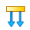
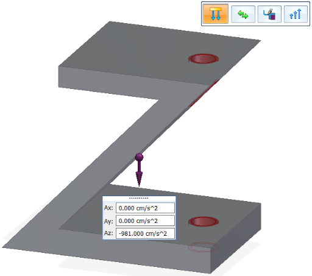
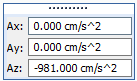

Gravity load
Applying a load as a boundary condition in a generative design study is part of the Generative Design workflow.
Using gravity loads
You can define which gravitational forces are being applied to ensure that your resultant part can withstand gravity, along with other loads, for the specified boundary conditions.
Use the Generative Design tab→Loads group→Gravity command

to apply a gravity load to the entire body selected as the design space.
Gravity load inputs
A gravity load is a general translational acceleration load. The gravity load is calculated by multiplying the specified acceleration of gravity by the model mass.
Gravity loads require the following information:
-
Material density—You can set this in the Material Table. The mass is calculated from the density of the material selected for the model.
-
Geometry—Automatically applied to the entire model.
-
Load Direction and Value—The gravity load symbol is displayed at the center of mass of the design space. The default is to apply gravity in the negative Z direction of the part, and the gravity load is shown in the Az input box. You can reverse the gravity direction using the Flip button on the command bar. This also changes the Az value from negative to positive.

If the part is oriented so that gravity will be applied along the X axis, then enter the gravity value in the Ax box, instead of the Az box. If the part is oriented such that gravity will be applied at an XY angle from the base coordinate system, then enter the gravity value in the Ax and Ay boxes to define that angle.
Editing a gravity load
Because gravity is applied to the entire design space, it is listed in the Generative Design pane in the general study definition area as either Gravity (Undefined) or Gravity (Defined). It is not listed under the Loads collector.
To edit a defined gravity load, you can double-click the Gravity (Defined) entry in the Generative Design pane, or simply select the Gravity command again.
If you want to remove a gravity load, right-click the Gravity (Defined) entry and choose Delete. This also resets the label to its initial Gravity (Undefined) state.